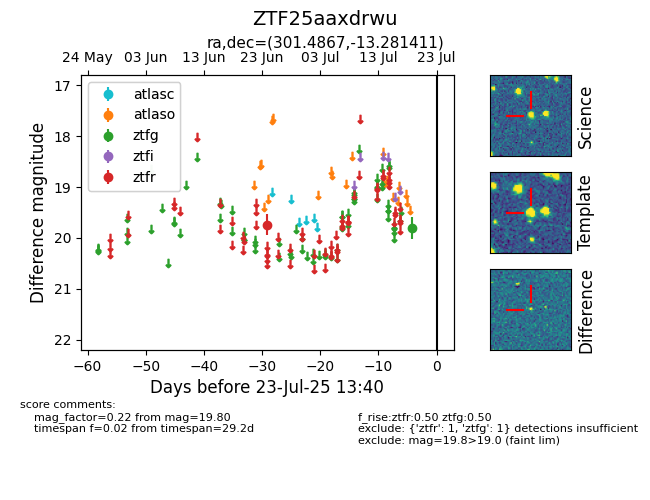

Target ZTF25aaxdrwu at 2025-07-23 13:40, see:
FINK: fink-portal.org/ZTF25aaxdrwu
Lasair: lasair-ztf.lsst.ac.uk/objects/ZTF25aaxdrwu
ALeRCE: alerce.online/object/ZTF25aaxdrwu
alt names
ZTF25aaxdrwu (ztf,fink)
coordinates:
equatorial (ra, dec) = (301.4867,-13.28141)
galactic (l, b) = (29.0420,-22.42178)
photometry
last ztfg=19.80, ztfr=19.74
1 ztfg, 1 ztfr detections
